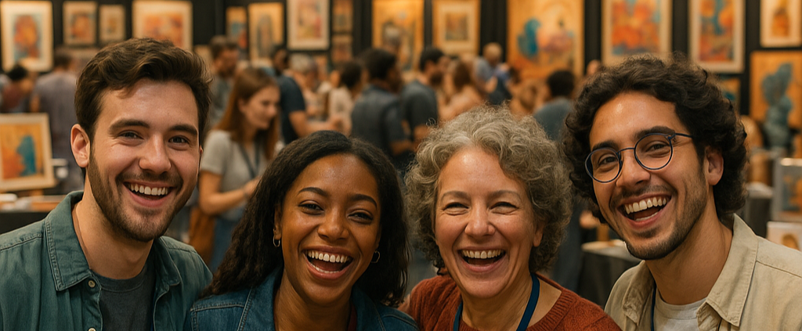

Encontre o Talento Perfeito. Faça Sua Arte Acontecer!
Nosso site é a ponte entre artistas incríveis e quem busca talento de verdade. Seja você um músico, DJ, fotógrafo, artista visual, performer ou produtor, aqui é o lugar onde sua arte encontra oportunidade. Se você é contratante, explore um catálogo diversificado de artistas, veja portfólios, escute demos e entre em contato com facilidade. Se você é artista, crie seu perfil, mostre seu trabalho e seja descoberto por quem valoriza o que você faz.
O que os artistas estão dizendo
"Consegui meu primeiro mural público pela plataforma. Foi um divisor de águas na minha carreira."

Ana Silva
Artista de Rua
"Fui chamada para uma exposição coletiva depois que viram meu perfil aqui. Incrível!"

Mariana Costa
Pintora
"Mais de 10 clientes encontraram meu trabalho por aqui. Hoje, vivo só da arte."

Carlos Mendes
Ilustrador Digital
Conectando talento com oportunidade.
Na nossa plataforma, a arte não passa despercebida. Aqui, criadores e contratantes se encontram
num só lugar — com visibilidade, propósito e liberdade criativa.
Se você é artista visual, fotógrafo, DJ, músico, performer ou produtor, esse é o espaço ideal
para mostrar seu talento ao mundo.
Se você busca artistas, navegue por portfólios completos, descubra novos nomes e entre em
contato direto com quem faz arte de verdade.
💡 Quer saber como tudo isso começou e por que acreditamos tanto nesse projeto?
Saiba mais sobre nós!
Dados sobre a eficiência da plataforma
Estudo #1:
Uma análise de comportamento artístico online revelou que artistas que utilizam o site apresentaram resultados 10 vezes superiores em alcance e vendas em comparação com aqueles que não o utilizam.
Saiba MaisEstudo #2:
Pesquisadores acompanharam a evolução de artistas ao longo de 12 meses e constataram que o uso contínuo do site levou a um crescimento de sucesso 10x maior em oportunidades e engajamento.
Saiba Mais